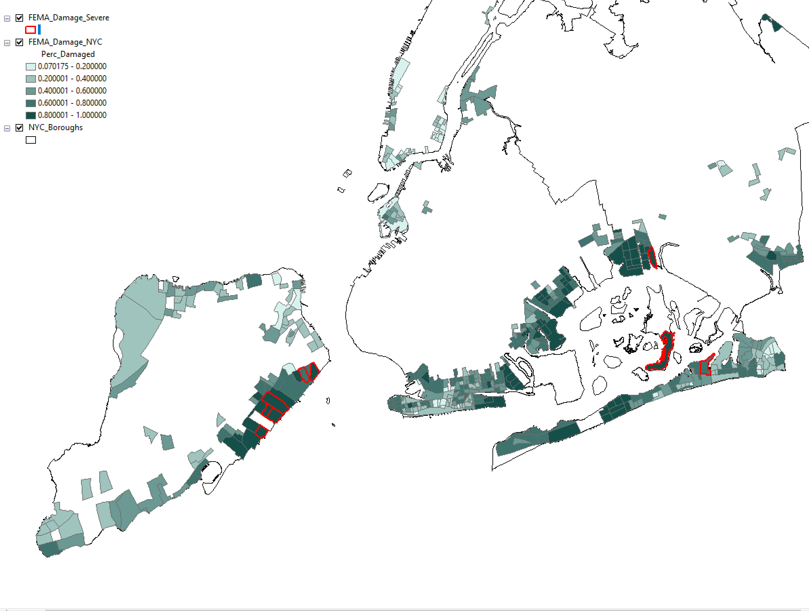
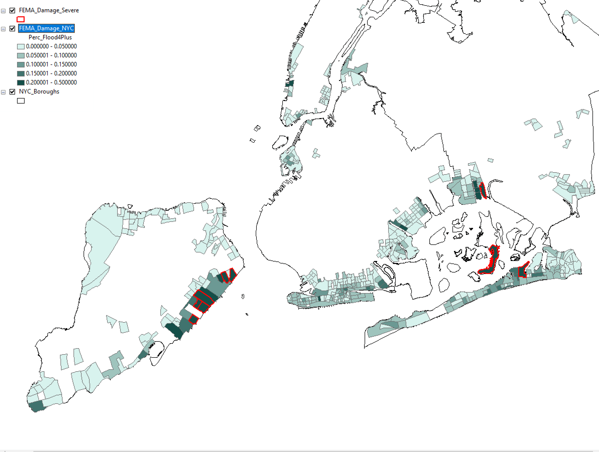
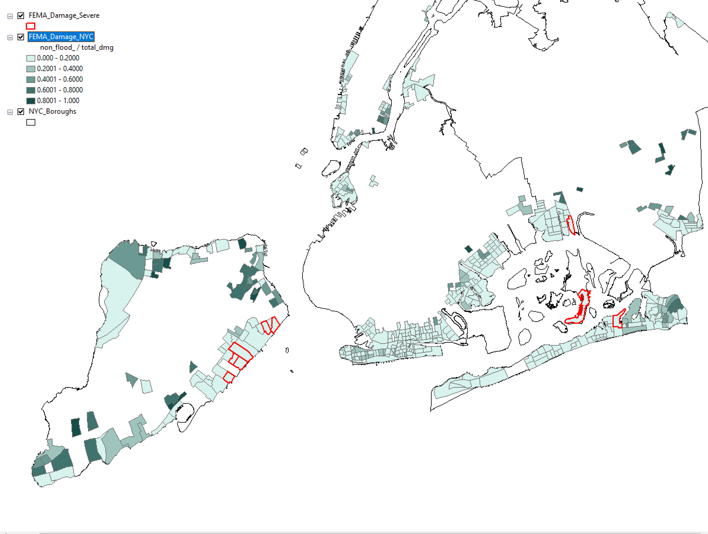

ASSIGNMENT 1 - Data Exploration
These maps were produced from FEMA damage assessments after Hurricane Sandy. The red outlines indicate the blockgroups where the most severe damage occurred. The data was aggregated to the census block group level.
Percent of buildings damaged
Percent of buildings that sufferred severe damage (4+ feet water on the first floor)
Percent of buildings damaged during the hurricane, but not by flooding

Percent of damaged buildings where owners did not insurance.